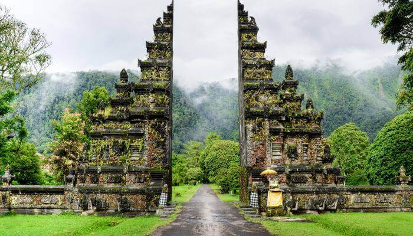
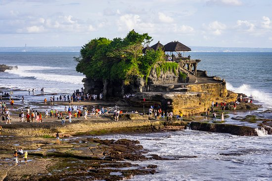
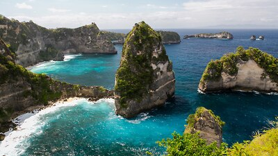

Bali Honeymoon Package
|  |
 |
 |
 |
8Days/7Night
Jumbo Discount Price Rs.39,999/-
About the Destination
Bali is Indonesia’s main tourist attraction. The province of Bali is located in the Lesser Sunda Islands. Tourism is the mainstay of this province and Denpasar is the provincial capital.
Experience Kerala on a Honeymoon
The island of Bali is justifiably called the ‘Island of the Gods’ as you can see almost every house and shop having a shrine with floral offerings at the entrance. People do not begin their day without paying their respects to the deities. For visitors, the stunning beauty of the place greatly accentuates the whole Balinese experience. As soon as you commence your romantic Bali honeymoon package, you are amazed by the beauty of the place, with huge statues and murals of deities and other mythological characters dotting the city.
Things to do in Bali during your Honeymoon:
- Pura Tanah Lot
- Ubud
- Kuta
- Seminyak
Best Time to Visit Bali
The best time to visit this tropical paradise is the island’s dry season which from April to October. The wet season or the rainy season experiences heavy rainfall and may not be favourable to explore all of the island’s attractions. Take a Bali package and explore this paradise.

|
|